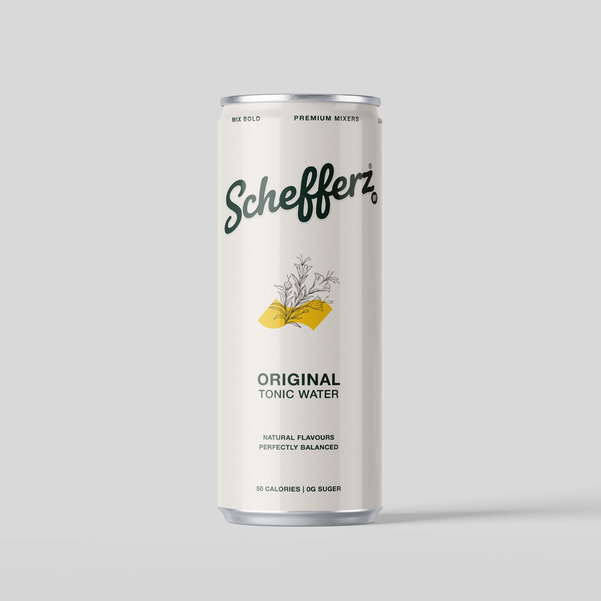
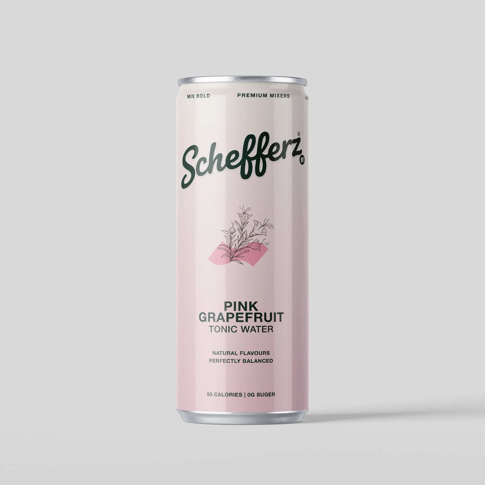

↗A classic, considered tonic profile designed to bring balance to the glass. Clean in presentation, versatile by nature.
Discover this flavour → Explore the range ↗
Explore the range ↗
THE SCHEFFERZ COLLECTION
Meet the first three expressions in the SCHefferz mixer range.

↗A classic, considered tonic profile designed to bring balance to the glass. Clean in presentation, versatile by nature.
Discover this flavour → ↗
↗
A floral expression with a softer visual character—made for slow pours, bright garnishes and thoughtful serves.
Discover this flavour →
↗A citrus-led expression with a fresh, vivid personality. A colourful companion to an uncomplicated, well-made serve.
Discover this flavour →We’re preparing the range for launch. Join the list and we’ll let you know when it’s ready to order.